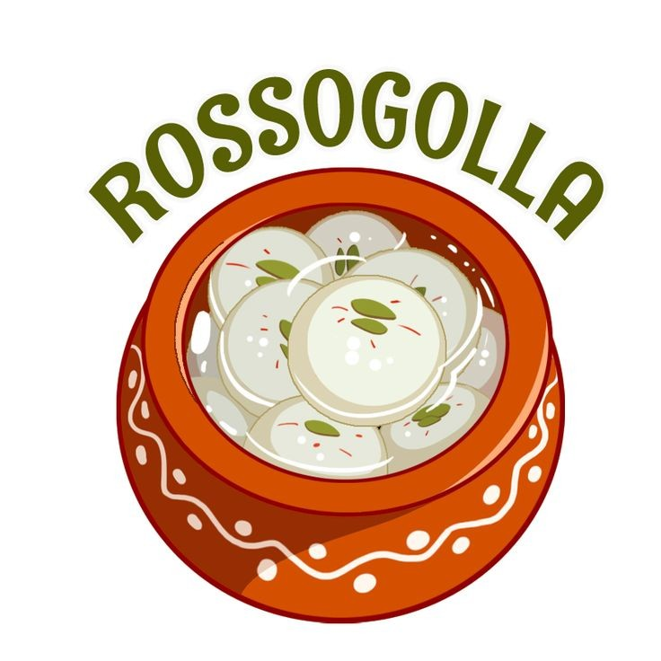

Rossogolla(Bengali Sweet)

Description
Spongy Rasgulla can be made at home very easily. This rasgullas are not only delicious but are super simple to make with few tricks.
Prep Time: 20minutes
Cook Time: 30minutes
Total Time: 50minutes
Servings: 15 pieces
Calories: 170kcal
Ingredients
- ▢Full Fat Milk - 1 liter
- ▢Lemon Juice - 1.5 tblspn
- ▢For Sugar Syrup
- ▢Sugar - 2 cups
- ▢Water - 5 cups
Steps
- ▢Squeeze some lemons, you will need 1.5 tblspn of lemon juice, line a sieve with muslin cloth and place it over a big bowl.
- ▢Take milk in a pot and put it on high heat. Let it come to a boil. Once it boils, take it off the heat and let it sit for 1 min.
- ▢Now add in lemon juice and mix gently. The milk will curdle. Once a greenish whey separates from the milk and the milk solids have curdled completely. Strain it in the sieve.
- ▢Now take a big bowl of cold water and wash the chenna well. rinse it in three changes of water.
- ▢Now squeeze it gently with your hands to remove any excess whey water, Tie a knot and hang it over a tap and leave it to drain for 30 mins. I squeezed occasionally to make things faster.
- ▢After 30 mins, take the chenna in a bowl and knead it gently, by rubbing with your palms and knuckles till you get a soft dough.
- ▢Once a dough is soft, take a small portion from it and roll it in your palms gently till you get a smooth ball.
- ▢Repeat with the remaining dough as well.
- ▢Now take sugar and water in a big pot and mix well so the sugar is melted. Once the sugar is melted, put it on stove and let it come to a rolling boil.
- ▢Now drop the balls into the sugar water and cover it with a tight lid and cook it for 8 to 10 mins till the ball has tripled in volume.
- ▢Now take it off the heat and let it sit for 15 mins.
- ▢Now open the lid and transfer it to a bowl and chill it for 5 to 6 hours.
- ▢Serve chilled.
Enjoy!